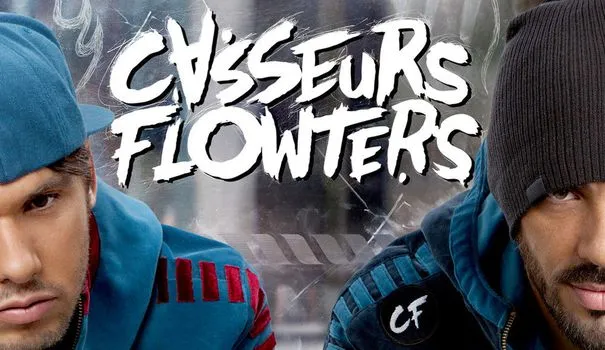

You can('t) do it
This is music from the film «Comment c'est loin» by the duo formed by Orelsan and Gringe, the Casseurs Flowters
Poster of “Comment c’est loin” by Orelsan
Two points of view, one unique feeling
In this song, Orelsan and Gringe talk to a friend of theirs, who turns his back on them by embarking on an impossible project from their point of view, to become a singer, and they take him down and tell him that it is not possible because he does not have the capacity. You can also get the impression that they tell us what we told them. You can’t really know if they’re talking to someone or if someone’s talking to them. This double reading is very interesting because it shows us a very little confident entourage has the idea that a relative misses in his professional life, but also how two «friends» make you understand with very raw words how you could, despite all your efforts, fulfill your dream of becoming a singer/rapper.

Orelsan and Gringe at the time of the Casseurs Flowters
If it were that easy…
It reminds me a lot of Po who happens to be the «dragon warrior» at the beginning of the film, but his entourage only tells him that he is not capable and that someone else should have been taken in his place. The part that best describes the connection between these two works is surely the refrain «If it were so easy, everyone would do it, who you would be to succeed or all the others have failed, forget your pretentious dreams, come down to Earth or you’ll never come back», Po was not, according to his associates, the person made for the role of the dragon warrior.
I chose this song first because it is a music that I appreciate a lot that comes from a film that I like just as much, but also and especially because I find that it associates almost perfectly with Po, the main character of Kung-fu Panda.
 FR
FR


 THE BOOK
THE BOOK